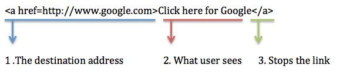

Understanding Hyperlinks
Imagine the Internet as a vast library, full of endless information. Links are like invisible bridges that connect these resources, making it easy for you to access them. This website takes a look at the world of hyperlinks, from their creation to how they work, and reveals the magic behind the seamless navigation of the Internet. This website dives into the world of hyperlinks, explaining how they work and their impact on the web.
Anchor Tags
Anchor Tags are the HTML elements that define a hyperlink. It is represented by the <a> tag. It allows users to navigate between different pages or sections within a page with a simple click. By defining the destination URL or target location, anchor tags enable seamless browsing experiences. Typically, in all browsers, links display as follows by default:
- An unvisited link is blue with an underline.
- A visited link is purple with an underline.
- An active link is red with an underline.
Anchor tags not only help in hopping from one page to another but also help in downloading files, anchoring to specific sections within the same document, and leveraging the power of HTML to create a seamless user experience.
Essential Attributes
The <a> tag has different attributes, each of which have a unique purpose.

| Attribute | Description |
|---|---|
| href | The primary attribute, indicating the link's intended destination. When used as a placeholder without navigation intent, it still maintains the hyperlink's interactive properties. |
| target | Controls where the linked document opens, with _blank opening links in a new tab. |
| rel | Defines the relationship between the current and the linked document. Common values like nofollow guide search engines on how to interpret the link, advising against transferring link equity in certain cases. |
| download | Suggests that the browser should download the linked resource, rather than navigating to it. |
Let us look at an interactive example to see how the anchor tags get implemented.
Create Your Hyperlink
Type the full web address (URL) you want your hyperlink to lead to when clicked. Ensure it includes https:// or http:// at the beginning. Example: https://www.google.com.
Next, write the text that will be displayed as the clickable hyperlink on the webpage. Choose words that clearly describe the link's destination, making it easy for you to know what to expect before clicking. Example: "Go to Google".
Link Preview:
HTML Code:
Hyperlinks can be seen in three different types across the web. They are:
-
Internal Links: These connect web pages within the same website. For example, when you click on a menu item or navigate to a related article, you’re using an internal link.
The code snippet below gives a glimpse of an internal link, which when clicked takes you to the top of this very page.
<a href="#top">Back to Top</a> -
External Links: External links, also known as outbound links, are hyperlinks that point to pages or resources outside the current website or domain. For example, external links can be used to provide additional information beyond what is available on your own site.
The code snippet given below takes you to the Wikipedia page of Hyperlinks. Try it out!
<a href="https://en.wikipedia.org/wiki/Hyperlink">Hyperlinks Wiki</a> - Incoming Links: Incoming links, or backlinks, are links from an external webpage to your site. In simple words, it is the opposite of an external link. It helps boost visibility and credibility of a website.
Hyperlink Optimization
Hyperlinks are more than just web connectors; they're essential for SEO, accessibility, user experience, and website maintenance.
-
SEO Considerations for Hyperlinks:Utilize relevant, keyword-rich anchor text for better search engine visibility and rankings. The strategic use of rel="nofollow" controls link equity flow and influences how search engines assess links, enhancing the interconnectedness and value of your site.
Bad: Use of generic text: Click here
Good: Use of descriptive text:Discover our eco-friendly gardening tips -
Accessibility:Ensure hyperlinks are accessible by using descriptive link text, making them easily distinguishable from regular text through styling cues like color and underlining, and ensuring keyboard navigability. This aligns with WCAG and aids all users, including those with disabilities.
Bad: "Read more here" without distinct color or underline.
Good: "Learn more about our accessibility policy" clearly indicated in blue and underlined. -
Maintainance:Regularly maintain hyperlinks by checking and fixing broken links and updating outdated URLs. This practice is crucial for preserving site credibility, user experience, and SEO rankings, preventing dead ends and ensuring information remains accessible.
Bad: Ignoring broken links, leading to a "404 Not Found" page. For example, a link to a discontinued product.
Good: Regularly using tools to check and fix broken links, ensuring all links lead to the intended content. Here's an example of a maintained link. -
Design and Usability: Design hyperlinks with high-contrast colors and traditional underlining to ensure they stand out, improving visibility and usability. Use target="_blank" sparingly to avoid disrupting the user experience, striking a balance between aesthetic appeal and functional clarity.
Bad: External links opening in the same tab, disrupting navigation.
Good: Use high-contrast colors and ensure external links like "Go to Google" open in new tabs sparingly, with a clear indication.
Did you know?
Click on the button below to lean a fun fact about hyperlinks and their history.
AJAX
AJAX (Asynchronous JavaScript and XML) is a technique for creating dynamic and interactive web applications without reloading the entire page. It allows web pages to communicate with a server in the background, fetch data, and update a portion of the page with the retrieved information. This results in a better user experience, faster interaction and reduces server load.
How does it work?
- A user triggers an action, like clicking a button or hovering over an element.
- JavaScript code initiates an asynchronous request to the server using an XMLHttpRequest (XHR) object.
- The webpage doesn't wait for the server's response. The user can continue interacting while data is fetched.
- The server processes the request and sends back data, usually in JSON format (though XML was used historically).
- Once the data arrives, a pre-defined JavaScript function (callback) is triggered to handle it.
- The callback function dynamically modifies a specific section of the webpage with the fetched data, updating content without a full reload.
Click for Cat
This interactive feature lets you discover adorable cat pictures with a single click. No page reloads are necessary, just click on the button below to get a cat!

Conclusion
Web architecture relies heavily on hyperlinks, which offer the necessary means of managing and browsing content on the internet. Links provide instant access to associated information, enabling a smooth user experience on anything from plain HTML sites to complex dynamic applications. The principles of effective information retrieval, user friendliness through direct control over their browsing path, and easy navigation are all embodied in their implementation, which is essential to the usability of websites. They play a crucial role in building an organized, connected network of content, guaranteeing that the web stays a user-friendly, accessible platform.